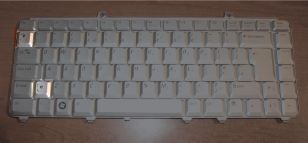

Алатката е направена од потребата за брз пристап до è и ѝ, за кои никако не успеав да најдам начин со кој ќе можам да пристапам до секоја од нив од секоја платформа (Windows, Mac, Linux) и од секоја тастататура користејќи македонска поддршка
Ако знаеш како да пристапиш до è и ѝ ова не ти е потребно за користење, но ќе ти бидам многу благодарен ако споделиш.
Единствено преку тастатурите како онаа прикажана на сликата подолу со екстра копче веднаш до левиот „Shift” може да се пристапи до è на Windows (многу ретки кај нас, сум ги забележал само не некои Dell лаптопи произведени во Ирска).

Досега до è и ѝ пристапував преку статија на Википедија каде во секцијата „Уникатни букви” достапни се è и ѝ — макотрпен процес за една толку тривијална работа кој изискува огромна физичка (пред сè на мускулите на прстите) и интелектуална енергија потрошена во барањето на одговорот на прашањето „која беше статијата на Википедија... ок за*би, како да ја барам преку Google?” (мислам дека програмерите секогаш стигнуваат до решението на најтешкиот начин).
Сè што треба да направите за да ви биде достапна алатката во веб прелистувачот е да го повлечете (drag & drop) горното копче во bookmark toolbar и ќe биде достапна на секоја страница. Пред да го направите тоа осигурајте се дека bookmark toolbar ќе биде видлив (детали достапни во кратките видеа подолу).
Алатката функционира како copy/paste — со кликнување на è или ѝ соодветната буква со надреден знак ќе биде ископирана (copy) и достапна за вметнување (paste) било каде.
Детали за користење на алатката во Firefox:
Детали за користење на алатката во Chrome:
Кодот е слободен и достапен на GitHub за каква било употреба.